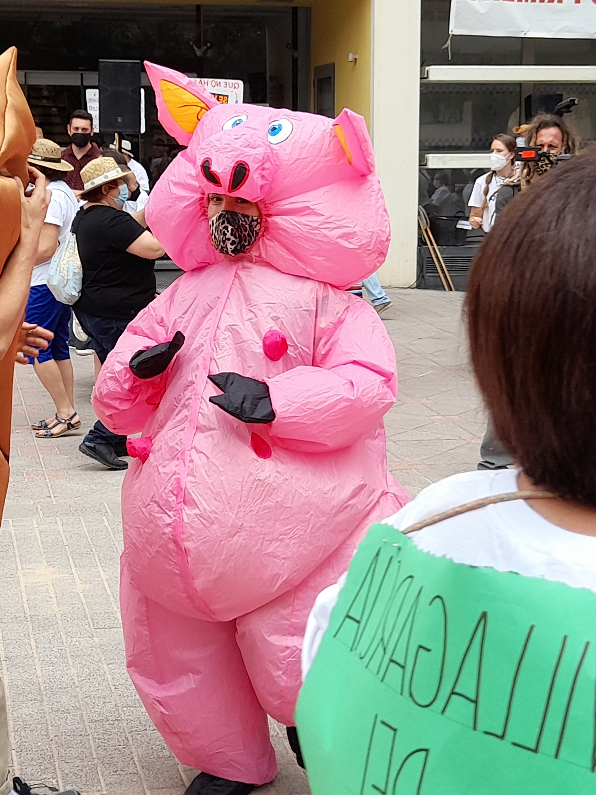

Esta página web es una forma de documentar el código en el que se base el analisis cuantitativo de mi proyecto de investigación. Está diseñada para ser usada al tiempo que se lee el artículo.
La página está organizada en varias pestañas. Puedes navegar por cada una de ellas según tus intereses.
El objetivo de esta web es hacer mi investigación reproducible y transparente. Por lo tanto, podrás encontrar explicaciones de mi código (escrito en el lenguaje de programación R). Las explicaciones bien son introducidas antes del código o dentro del código (en ese caso, las explicaciones están introducidas por una almohodilla “#”).
Este trabajo no sería posible sin la ayuda de muchas personas.
Empezando por el nivel más obvio, la página web ante tus ojos no sería posible sin el código que el doctor Matthew Crump compartió en su cuenta de github.
De una manera similar, me gustaría agradecer por su tiempo, paciencia y ayuda a varias personas clave para desarollar la investigación que ha creado el artículo “Luchando contra futuras zoonosis”. La producción de conocimiento nunca es una tarea individual. Estoy particularmente agradecido a mis informantes, quienes han sido las y los amables co-productoras y co-productores de conocimiento que me han permitido conocerles y me han enseñado sus luchas. Os pido perdón en caso de que haya malinterpretado vuestros puntos de vista.
Mi propia formación académica como un científico social significa que no he sido entrenado para explorar los impactos de las “macrogranjas” en la salud humana y medioambiental. Para ello, contacté con miembros de la Universidad de Castilla-La Mancha (UCLM) que me asesoraron y aconsejaron a la hora de obtener literatura relevante para corregir mis errores. Estoy en deuda con Hugo, Lucía y Carmen, del departamento de Ingeniería Agronóma de la UCLM de Albacete, por mandarme dicho material y hablar conmigo mientrás compartiamos un café.
Del mismo modo, el neumólogo Jesús fue una ayuda incalculable para poder entender el impacto de la ganadería industrial en la salud humana. Al mandarme artículos, y tener la paciencia de explicarmelos, Jesús me pudo ayudar a comprender el rol de los antibióticos en la industria ganadera contemporanea.
Así mismo, me gustaría agradecer el enorme trabajo que llevan a cabo el equipo editorial de “Ecología Política: Cuadernos de Debate Internacional” y las revisoras anónimas que, amablemente, me han aconsejado a la hora de mejorar el artículo. No sólo son un grupo de personas comprometidas con la ecología política (y por ende, por el mundo del que somos inter- y eco-dependientes), sino que me han ayudado a corregir errores de base que habría pasado por alto de otra forma.
Finalmente, aunque escribo este trabajo desde la UCLM, parte de la investigación fue realizada durante mi Trabajo de Fin de Máster en King’s College London y Sciences Po Paris. Sería injusto no expresar mi gratitud a mi supervisora en King’s College London. Gracias a la Doctora Pradella obtuve una guía paciente para descubrir el mundo de la investigación. Un mundo aposionante en el que quiero seguir aprendiendo.

Mujer conformante de Pueblos Vivos Cuenca, disfrazada como un cerdo y bailando jotas manchegas durante la Vendimia de la Vergüenza en Quintanar del Rey 19/06/2021